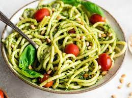

pesto pasta
This flavorful sauce is made of basil, extra-virgin olive oil, parmesan cheese, pecorino cheese, pine nuts, garlic and salt, traditionally ground in a ceramic or marble mortar.
Ingredients
- 1 (16 ounce) package pasta
- 2 tablespoons olive oil
- ½ cup chopped onion
- 2 ½ tablespoons pesto
- salt to taste
- ground black pepper to taste
- 2 tablespoons grated Parmesan cheese
Steps
- Cook spaghetti in salted water to al dente according to package directions. Before draining be sure to reserve the 1/2 cup pasta water.
- Make pesto sauce: To a 7-cup food processor add basil leaves, parmesan, pine nuts and garlic. Cover with lid and pulse in short bursts until finely minced.
- Scrape down food processor. Cover, then with food processor running pour olive oil in through the feed tube of the lid. Don’t over-process, just blend.
- Season with salt to taste.
- Drain pasta, reserving some pasta water: Drain pasta once al dente then add to a large serving bowl. Pour in 1/4 cup pasta water and toss. Let it cool 1 – 2 minutes.
- Toss pasta and pesto: Add all of the pesto and toss. Thin with up to 1/4 cup more pasta water as desired and garnish with more parmesan and pine nuts if desired.